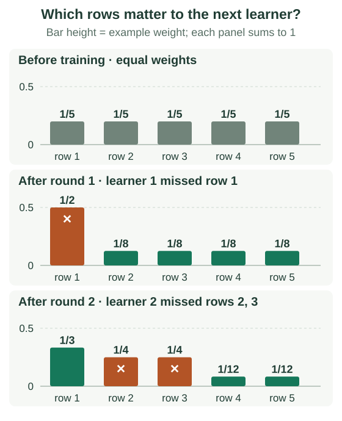
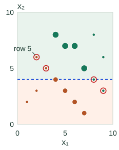
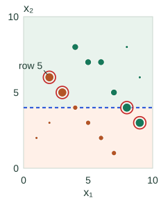

AdaBoost: Weights, Votes & the Proof
In Boosting as Gradient Descent in Function Space, we saw that every boosting round updates an additive score $F_t(x) = F_{t-1}(x) + \alpha_t h_t(x)$ by choosing $h_t$ to align with the negative loss gradient. Binary discrete AdaBoost ($y_i, h_t(x_i) \in \{-1, +1\}$) is the exact specialization of that framework to exponential loss.
AdaBoost tracks two distinct quantities: example weights $D_t(i)$, which tell the next weak learner which training rows matter most, and learner votes $\alpha_t$, which weight each fitted classifier in the final ensemble.
Separate example weights from learner votes
At round $t$, the example weights $D_t(i) \ge 0$ sum to $1$ (initialized uniformly as $D_1(i) = 1/n$). After fitting a weak classifier $h_t$ on those weights, its weighted error is the total weight of the rows it misclassifies:
The correctly classified rows carry the remaining weight $1-\epsilon_t$. For $0 < \epsilon_t < 0.5$, AdaBoost assigns $h_t$ the vote strength:
Smaller weighted error yields a larger log-odds ratio and a stronger vote; at $\epsilon_t = 0.5$ (chance performance), $\alpha_t = 0$.
Connect exponential loss to functional gradient descent
With labels $y_i \in \{-1, +1\}$, AdaBoost minimizes the exponential loss over the current ensemble score $F_{t-1}(x)$ plus the new step $\alpha h_t(x)$:
where $\ell_i^{\mathrm{old}} = e^{-y_i F_{t-1}(x_i)}$ is row $i$’s current loss (starting at $\ell_i^{\mathrm{old}} = e^0 = 1$ when $F_0(x) = 0$). Normalizing the current losses defines the example weights:
1. Why the weak learner minimizes weighted error
By the first-order functional gradient descent derivation, the weak learner $h_t$ minimizes the inner product between the loss gradient and $h_t$. Differentiating $\mathcal{L}(F)$ with respect to $F(x_i)$ at $F_{t-1}$ gives:
Minimizing $\bigl\langle \frac{\partial \mathcal{L}}{\partial F}, h \bigr\rangle$ is therefore equivalent to maximizing the weighted margin alignment $\sum_{i=1}^n D_t(i) y_i h(x_i)$. Because $y_i h(x_i)$ is $+1$ when correct and $-1$ when wrong, $y_i h(x_i) = 1 - 2\,\mathbb{I}[h(x_i) \ne y_i]$, so:
That is why fitting $h_t$ to the negative gradient of exponential loss reduces to minimizing weighted classification error.
2. Solve for the step size $\alpha_t$
Dividing the new total loss by the fixed constant $L_{\mathrm{old}} = \sum_j \ell_j^{\mathrm{old}}$ gives the normalized objective $Z_t(\alpha)$:
since correct rows ($y_i h_t(x_i) = +1$, total weight $1-\epsilon_t$) are multiplied by $e^{-\alpha}$ and missed rows ($y_i h_t(x_i) = -1$, total weight $\epsilon_t$) are multiplied by $e^{\alpha}$. Differentiating with respect to $\alpha$ and setting to zero gives the exact line-search step:
Since $Z_t''(\alpha) = Z_t(\alpha) > 0$, this $\alpha_t$ is the unique global minimum (see Schapire’s exponential-loss explanation). To prepare round $t+1$, multiply missed row weights by $e^{\alpha_t}$ and correct row weights by $e^{-\alpha_t}$, then renormalize so $D_{t+1}$ sums to $1$.
Where the first learner comes from
Consider five rows $x=[1,2,3,4,5]$ with labels $y=[+1,-1,-1,+1,+1]$ and initial weights $D_1(i)=0.2$. Searching midpoint thresholds (where each leaf predicts its weighted majority class, breaking ties toward $+1$) and constant classifiers gives:
| Candidate | Predictions on rows 1–5 | Weighted error |
|---|---|---|
| Constant +1 | +, +, +, +, + | 0.4 |
| Constant −1 | −, −, −, −, − | 0.6 |
| Split 1.5 / 2.5 / 4.5 | +, +, +, +, + | 0.4 |
| Split 3.5 | −, −, −, +, + | 0.2 |
The winner splits at $3.5$ and misses only row 1 ($\epsilon_1 = 0.2$).
How weights affect a tree’s split score
In a Gini-based decision tree (such as scikit-learn’s sample_weight implementation), class proportions $p_k$ and child node weights $W_L, W_R$ are computed by summing $D_t(i)$ rather than counting rows:
Reweighting changes which split wins even though $(x_i, y_i)$ never change:
| Threshold | Equal weights ($0.2$ each) | After Round 1 ($0.5$ on row 1, $0.125$ on rows 2–5) |
|---|---|---|
| $x<1.5$ | 0.400 | 0.250 |
| $x<3.5$ | 0.267 | 0.333 |
Work through two rounds
Round 1: Since $h_1$ misses only row 1 ($\epsilon_1 = 0.2$), its vote and weight multipliers are:
Before normalization, missed row 1 has weight $0.2 \times 2 = 0.4$ and each of the four correct rows has $0.2 \times 0.5 = 0.1$ (total $0.8$). Dividing by $0.8$ gives $D_2(1) = 0.5$ and $D_2(2\text{..}5) = 0.125$: missing row 1 now costs as much as missing the other four rows combined.
Round 2: Under $D_2$, the best weighted error is $\epsilon_2 = 0.25$ (attained by Constant $+1$, which misses rows 2 and 3 of weight $0.125$ each). Its vote is $\alpha_2 = \tfrac12\ln 3 \approx 0.549$, which multiplies missed rows by $\sqrt{3}$ and correct rows by $1/\sqrt{3}$ before renormalizing by $Z_2 = 0.25\sqrt{3} + 0.75/\sqrt{3} = \sqrt{3}/2$:
| Row | Initial weight $D_1$ | After round 1 ($D_2$) | After round 2 ($D_3$) |
|---|---|---|---|
| 1 | 0.2 | 0.5 | 1/3 |
| 2 | 0.2 | 0.125 | 1/4 |
| 3 | 0.2 | 0.125 | 1/4 |
| 4 | 0.2 | 0.125 | 1/12 |
| 5 | 0.2 | 0.125 | 1/12 |

Check your understanding: why can’t round 2 reuse learner 1?
Under $D_2$, row 1 carries weight $0.5$, so learner 1 has weighted error $\epsilon = 0.5$ and vote $\tfrac12\ln(0.5/0.5) = 0$. In fact, for any learner $h_t$, the updated weights $D_{t+1}$ make its weighted error exactly $0.5$ on the next round.
Ensemble prediction vs. single-round weight updates
At inference time, example weights $D_t(i)$ are not used; the ensemble predicts $\operatorname{sign}\!\bigl(\sum_t \alpha_t h_t(x)\bigr)$. After two rounds on row 1 ($y_1 = +1$), $h_1(x_1) = -1$ and $h_2(x_1) = +1$, giving $F_2(x_1) = 0.693(-1) + 0.549(+1) = -0.144 < 0$. Even though $h_2$ classified row 1 correctly (reducing its weight from $0.5$ to $1/3$), the ensemble still misclassifies row 1 because $\alpha_1 > \alpha_2$. Weight updates depend only on the latest learner’s mistakes.
Explore five fitted stumps on a two-feature dataset
▶ AdaBoost, One Round at a Time
Each step actually fits a stump on 16 rows with two numeric features. Compare weights entering the round with weights after its update. Circle area is proportional to weight, using the same scale in both plots.
Round 3 of 5: the stump misses 4 rows, while the combined classifier gets all 16 right.
Stump: x₂ > 4 → A; x₂ ≤ 4 → B.
Entering weights
Updated weights
Round 3: entering weights

Round 3: updated weights

The blue line is this round’s stump; the tinted regions show its A and B predictions. Points on the line follow the ≤ branch. Red rings identify stump mistakes, even when the combined classifier is correct. Row 5 is worked through below.
- Stump weighted error ε
- 0.100
- Stump missed rows
- 4 / 16 (25%)
- Stump vote α
- 1.099
- Combined training accuracy
- 100.0%
Combined accuracy after each round
- t175%
- t275%
- t3100%
- t4—
- t5—
Inspect all 16 row weights and predictions
Weights are normalized separately before and after the update; each set sums to 1. Displayed values are rounded to four decimal places. “Stump” is the current learner; “combined” includes all learners so far.
Row 1 · (1, 2) · B / −1
Entering: 0.0250
Updated: 0.0139
Stump: correct · combined: correct
Row 2 · (2, 3) · B / −1
Entering: 0.0250
Updated: 0.0139
Stump: correct · combined: correct
Row 3 · (4, 4) · B / −1
Entering: 0.0750
Updated: 0.0417
Stump: correct · combined: correct
Row 4 · (6, 2) · B / −1
Entering: 0.0750
Updated: 0.0417
Stump: correct · combined: correct
Row 5 · (2, 6) · B / −1
Entering: 0.0250
Updated: 0.1250
Stump: wrong · combined: correct
Row 6 · (3, 5) · B / −1
Entering: 0.0250
Updated: 0.1250
Stump: wrong · combined: correct
Row 7 · (5, 3) · B / −1
Entering: 0.0750
Updated: 0.0417
Stump: correct · combined: correct
Row 8 · (7, 1) · B / −1
Entering: 0.0750
Updated: 0.0417
Stump: correct · combined: correct
Row 9 · (8, 8) · A / +1
Entering: 0.0250
Updated: 0.0139
Stump: correct · combined: correct
Row 10 · (9, 6) · A / +1
Entering: 0.0250
Updated: 0.0139
Stump: correct · combined: correct
Row 11 · (6, 7) · A / +1
Entering: 0.1250
Updated: 0.0694
Stump: correct · combined: correct
Row 12 · (4, 8) · A / +1
Entering: 0.1250
Updated: 0.0694
Stump: correct · combined: correct
Row 13 · (8, 4) · A / +1
Entering: 0.0250
Updated: 0.1250
Stump: wrong · combined: correct
Row 14 · (5, 7) · A / +1
Entering: 0.1250
Updated: 0.0694
Stump: correct · combined: correct
Row 15 · (7, 5) · A / +1
Entering: 0.1250
Updated: 0.0694
Stump: correct · combined: correct
Row 16 · (9, 3) · A / +1
Entering: 0.0250
Updated: 0.1250
Stump: wrong · combined: correct
Inspect the complete five-round run
| Round | Rule predicting A; otherwise B | Weighted error ε | Vote α | Combined accuracy |
|---|---|---|---|---|
| 1 | x₁ > 3.5 | 0.250 | 0.549 | 75% |
| 2 | x₁ > 7 | 0.167 | 0.805 | 75% |
| 3 | x₂ > 4 | 0.100 | 1.099 | 100% |
| 4 | x₁ > 3.5 | 0.167 | 0.805 | 100% |
| 5 | x₁ > 7 | 0.167 | 0.805 | 100% |
At round 3, the stump misses 4 of 16 rows ($\epsilon_3 = 4 \times 0.025 = 0.10$), yet the combined classifier achieves 100% training accuracy. For example, on row 5 at $(2, 6)$ (true class B / $-1$), stump 3 wrongly predicts $+1$, raising its weight from $0.025$ to $0.125$, but stumps 1 and 2 still outvote it: $F_3(x_5) = -0.549 - 0.805 + 1.099 = -0.255 < 0$.
Margins and the training-error bound
The signed margin is $y_iF(x_i)$. Even after every training row is classified correctly ($y_i F(x_i) > 0$), larger margins still reduce $e^{-y_i F(x_i)}$, so additional rounds continue updating the ensemble.
Exponential training-error bound
At round $t$, substituting $\alpha_t$ gives $Z_t(\alpha_t)=2\sqrt{\epsilon_t(1-\epsilon_t)}=\sqrt{1-4\gamma_t^2}$, where $\gamma_t = \tfrac12 - \epsilon_t$ is the edge over random guessing. Since every misclassified or tied row has $e^{-y_i F_T(x_i)} \ge 1$, the training error after $T$ rounds satisfies:
If every round maintains a uniform edge $\gamma_t \ge \gamma > 0$, training error decays exponentially at rate $e^{-2T\gamma^2}$. This bounds training error only; noisy labels can still attract large weights and overfit.
Implementation and boundary cases
D = [1/n] * n
learners = []
for t in range(max_rounds):
h = fit_weighted_classifier(X, y, D)
error = sum(D[i] for i in rows if h(X[i]) != y[i])
if error == 0: return [(1.0, h)] # perfect weak learner
if error >= 0.5: break # no edge over chance
alpha = 0.5 * log((1 - error) / error)
D = normalize(D[i] * exp(-alpha * y[i] * h(X[i])) for i in rows)
learners.append((alpha, h))
score(x) = sum(alpha * h(x) for alpha, h in learners)- $\epsilon_t = 0$ (perfect learner): $\ln((1-\epsilon_t)/\epsilon_t)$ diverges; return the perfect classifier or assign a finite dominating vote and stop.
- $\epsilon_t = 0.5$ (chance) or $\epsilon_t > 0.5$: $\alpha_t = 0$ makes no progress, and $\epsilon_t > 0.5$ inverts the vote sign (either stop, reject the learner, or flip its binary polarity).
- General losses: Whereas AdaBoost’s multiplicative weight update relies on $e^{-(F+\alpha h)} = e^{-F}e^{-\alpha h}$, Gradient Boosting fits regression trees directly to the negative gradient of any differentiable loss (as derived in Functional Gradient Descent).
Sources and next steps
- Schapire: The Boosting Approach to Machine Learning — Binary AdaBoost, exponential loss, and training-error bounds.